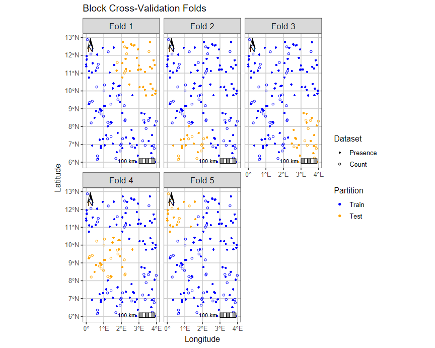
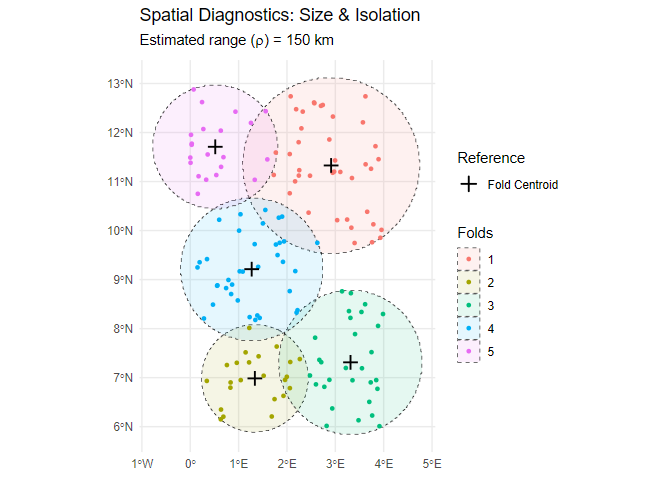

📋 Overview
isdmtools is an R package that streamlines the preparation, visualisation, and evaluation of multisource geospatial data for biodiversity modelling. Specifically engineered for Integrated Species Distribution Models (ISDMs) with a particular focus on the Bayesian framework, the package provides a unified suite of tools for managing presence-only, count, and presence-absence data. It ensures robust, reproducible workflows through dedicated tools for block cross-validation, suitability analysis and standardised model evaluation and validation.
📦 Installation
- You can install the latest development version of
isdmtoolsdirectly from GitHub using theremotespackage.
if (!require("remotes")) install.packages("remotes")
remotes::install_github("sodeidelphonse/isdmtools")- Alternatively, if you are on a Windows operating system and don’t have
Rtoolsinstalled due to restricted internet access, you can download the binary build from our latest GitHub Releases and then install it with:
install.packages("C:/path/to/your/download/isdmtools_<version>.zip", repos = NULL, type = "win.binary")where <version> is the version number (e.g., v0.4.0) of the release you downloaded and {C:/path/to/your/download/} is the path to the binary ".zip" file.
- For macOS or Linux platforms, you must compile the source code (
"isdmtools_<version>.tar.gz") available from our latest GitHub Releases. Download the desired version and then install it with:
install.packages("/path/to/your/download/isdmtools_<version>.tar.gz", repos = NULL, type = "source")where <version> is the version number of the release you downloaded and {/path/to/your/download/} is the path to the ".tar.gz" file.
🛠️ Core Features
The package provides a set of core functions and classes to handle common tasks of data preparation, visualisation, post-modelling analysis, and model evaluation:
Spatial Resampling and Folds Diagnostics: Create a
DataFoldsobject that binds multiplesfdatasets and generates spatially-separated cross-validation folds usingcreate_folds()constructor. This ensures the resulting models are robust to spatial autocorrelation. The key methodscheck_folds()andcheck_env_balance()operate onDataFoldsto efficiently check the independence and environmental balance of created folds, respectively.Suitability Analysis: Standardise model predictions for consistent mapping and compute a final habitat suitability index. The
suitability_index()function transforms raw integrated model predictions into a suitability score using the inverse of the complementary log-log transform (cloglog).Model Evaluation: Compute comprehensive evaluation metrics, including ROC- and error-based metrics for each dataset using the
compute_metrics()constructor. The package also handles dataset-weighted composite scores, providing a holistic view of model performance. Whilstsample_background()is called internally to sample pseudo-absences for presence-only data, users can extract theBackgroundPointsobject with theget_background()helper in order to visualise the generated pseudo-absences.Mapping: Visualise model predictions and final habitat suitability maps. The plotting method
generate_maps()is designed to receive a formatted object fromformat_predictions()to provide a clear and informative map. It visualises multiple variables of model predictions (e.g. mean, SD, and quantiles), providing an easy way to interpret models’ results. Users can customize the finalggplot2object if needed.Statistical Validation:
simulate_replicates()generate replicates of data () from the posterior samples of the fitted model.compute_ppc_stats()calculates Pearson Chi-squared statistics and Bayesian -values from the replicated data to assess the model fit.Other Methods: The package includes the
summary(),print()andplot()methods for most of the available data structures. These provide a concise summary and clear visualisation of spatial data partition, folds’ diagnostics, and models’ validation. Other methods are discussed in the package vignettes.
💻 Usage Example
The core workflow of isdmtools involves creating a DataFolds object and then extracting specific folds for an integrated modelling pipeline.
Data preparation
First, let’s load the required packages.
We create some dummy data.
# Set the random seed for reproducibility
set.seed(42)
# Presence-only data (e.g. Citizen science data)
presence_data <- data.frame(
x = runif(100, 0, 4),
y = runif(100, 6, 13)
) |>
st_as_sf(coords = c("x", "y"), crs = 4326)
# Count data (e.g. species count from a structured design)
count_data <- data.frame(
x = runif(50, 0, 4),
y = runif(50, 6, 13),
count = rpois(50, 5)
) |>
st_as_sf(coords = c("x", "y"), crs = 4326)
# Create a list of datasets
datasets_list <- list(Presence = presence_data, Count = count_data)Spatial partitioning
We can now create spatial folds using the default blocking engine.
# Create the 'DataFolds' object
my_folds <- create_folds(datasets_list, k = 5, seed = 23)
#> train test
#> 1 110 40
#> 2 127 23
#> 3 121 29
#> 4 113 37
#> 5 129 21
print(my_folds)
#> A DataFolds S3 object with 5 folds.
#> Datasets included: Presence, Count
#>
#> Summary of individuals per dataset:
#> Simple feature collection with 10 features and 3 fields
#> Geometry type: MULTIPOINT
#> Dimension: XY
#> Bounding box: xmin: 0.0009555863 ymin: 6.009666 xmax: 3.986211 ymax: 12.87862
#> Geodetic CRS: WGS 84
#> # A tibble: 10 × 4
#> datasetName folds_ids n geometry
#> <fct> <int> <int> <MULTIPOINT [°]>
#> 1 Presence 1 34 ((2.447115 10.36529), (3.038177 10.21236), (3.33…
#> 2 Presence 2 14 ((0.6850573 6.203601), (1.518237 7.039126), (1.7…
#> 3 Presence 3 18 ((2.582528 7.814824), (3.312634 8.219373), (3.13…
#> 4 Presence 4 19 ((1.085146 9.163205), (1.021715 9.169121), (0.86…
#> 5 Presence 5 15 ((1.560814 12.43443), (1.333709 11.03565), (1.59…
#> 6 Count 1 6 ((3.570874 12.20728), (2.189704 12.47532), (2.29…
#> 7 Count 2 9 ((0.6315204 6.150152), (0.6360895 6.349245), (1.…
#> 8 Count 3 11 ((3.407724 7.888013), (3.540471 8.339619), (3.28…
#> 9 Count 4 18 ((0.2828876 8.206826), (0.7418143 8.82648), (0.8…
#> 10 Count 5 6 ((1.254735 12.19655), (0.6865285 11.49745), (0.6…We can visualise folds created with the observed data
# Visualise the block CV folds
plot(my_folds, nrow = 2)
Extract folds for an integrated modelling workflow
One can extract a specific fold to evaluate the integrated model and keep the remaining folds for its training.
# Extract the fold 3 for model evaluation
splits_fold_3 <- extract_fold(my_folds, fold = 3)
# You can access both 'train' and 'test' sets and their corresponding datasets
train_data <- splits_fold_3$train
test_data <- splits_fold_3$testFolds diagnostics
You can check the spatial independence of folds using check_folds command.
# Check spatial independence of folds using an estimated range rho (150 km)
geo_diag <- check_folds(my_folds, rho = 150, plot = TRUE)
print(geo_diag)
#>
#> === isdmtools: Spatial Fold Diagnostic ===
#> Model Spatial Range (rho): 150 km
#>
#> independence Count
#> 1 Weakly Independent 5
#>
#> Internal Size (Max Distance to Fold Centroid):
#> Min. 1st Qu. Median Mean 3rd Qu. Max.
#> 121.1 139.3 160.4 156.3 162.3 198.2
#>
#> Inter-block Gap (Min Distance to Nearest Fold):
#> Min. 1st Qu. Median Mean 3rd Qu. Max.
#> 22.75 22.75 24.62 27.72 24.62 43.87
#> ==========================================
# Plot the diagnostics results
plot(geo_diag)
To Learn More
For a comprehensive overview of spatial data resampling, please refer to the Get started guide. To dive deep into the integrated modelling workflow, please, consult the advanced guide on the ISDM Evaluation Workflow.
🤝 Contributing
We welcome contributions! If you encounter an issue or have a feature request, please open an issue via our GitHub repository issue tracker. We present below our contribution guide:
Code of Conduct: The
isdmtoolsproject is released with a Contributor Code of Conduct. By contributing to this project, you agree to abide by its terms.How to Help: Before submitting a Pull Request, please open an issue via our issue tracker so we can discuss the proposed changes.
Coding Style: We follow the
tidyversestyle guide and we recommend you to runlintr::lint_package()before submitting code. Please, minimise the use of additional package dependencies when proposing changes.-
Virtual Environment: This project uses
renvto manage package dependencies and ensure reproducibility. A contributor who wants to install all the necessary packages for the project can simply follow these steps:- Make sure you have the
renvpackage installed:
install.packages("renv")- With the project directory as your working directory, use
renvto install all packages listed in therenv.lockfile:
renv::restore() - Make sure you have the
📝 Citation
To cite this package in your research work, run the following command in your R session to generate the plain text and BibTex entry of the citation:
citation("isdmtools")⚖️ License
The isdmtools package is released under the MIT License.